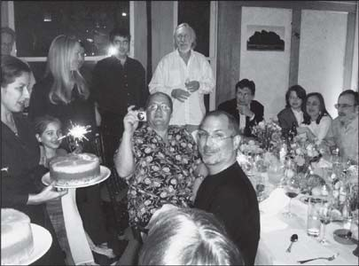
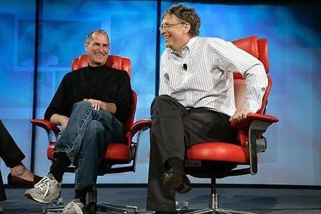

Chương 34

au này, Jobs tự biện bạch rằng bệnh ung thư phát sinh vào khoảng thời gian làm việc kiệt sức của ông, bắt đầu từ năm 1997, khi điều hành cả Apple và Pixar. Trong gian đoạn đi đi về về giữa hai bên, ông đã phát bệnh sỏi thận và vài bệnh vặt khác, ông về nhà trong trạng thái kiệt sức đến độ không thể cất tiếng. “Có lẽ đó là lúc căn bệnh ung thư bắt đầu âm thầm tiến triển, vì khi đó hệ thống miễn dịch của tôi quá yếu,” ông nói.
Không bằng chứng khoa học nào cho thấy sự kiệt sức hay hệ thống miễn dịch yếu ớt sẽ gây ra ung thư. Tuy nhiên, những vấn đề về thận của Jobs đã gián tiếp dẫn đến việc phát hiện ung thư.
Vào tháng mười năm 2003, ông tình cờ gặp một bác sỹ tiết niệu từng chữa trị cho ông trước đó, bà yêu cầu Jobs đi chụp cắt lớp thận và niệu quản. Lần cuối ông chụp đã cách đấy đã năm năm. Lần chụp mới cho thấy thận của Jobs không có vấn đề gì, nhưng lá lách xuất hiện một dấu vết, vì vậy bà yêu cầu ông sắp xếp thời gian kiểm tra lá lách, ông đã không đi. Như thường lệ, ông rất giỏi trong việc cố ý phớt lờ những thông tin mà ông không muốn xử lý. Nhưng bà vẫn kiên trì. Vài ngày sau, bà nói “Steve, điều này thật sự rất quan trọng. Ông phải kiểm tra.” Giọng điệu khẩn cấp của bà khiến ông chấp nhận, ông đến khám vào sáng sớm, sau khi nghiên cứu bản chụp, các bác sỹ gặp ông để thông báo tin xấu rằng đó là một khối u. Một trong số họ còn đề nghị ông nên thu xếp công việc cẩn thận, như một cách tử tế để thông báo rằng ông có lẽ chỉ còn sống được vài tháng. Tối đó, họ tiến hành sinh thiết bằng cách đưa dụng cụ nội soi xuống cổ họng, qua đường ruột, rồi đâm một chiếc kim vào lá lách của ông và lấy một vài tế bào khối u.
Powell còn nhớ các bác sỹ của chồng cô đã rất vui mừng. Hóa ra đó chỉ là tế bào đảo hoặc các u tụy nội tiết thần kinh hiếm khi xuất hiện nhưng phát triển chậm vì thế có thể chữa trị thành công, ông may mắn vì phát hiện bệnh sớm - nhờ vào lợi ích phụ của quy trình kiểm tra thận - vì thế có thể phẫu thuật cắt bỏ trước khi nó lan rộng.

Jobs ở tuổi 50 (trung tâm bức ảnh), với Eve và Laurene (đằng sau chiếc bánh), Eddy Cue (cạnh cửa sổ), John Lasseter (đang cầm máy quay) và Lee Clow (người có râu)
Một trong những cuộc gọi đầu tiên của ông là cho Larry Brilliant, lần đầu tiên họ gặp nhau là tại một ngôi đền ashram ở Ấn Độ. “Ông còn tin vào Thượng Đế không?” Jobs hỏi ông. Brillant trả lời có, ròi họ thảo luận về những con đường đến với Thượng Đế do trưởng lão người Hindu, Neem Karoli Baba, truyền dạy. Brillant hỏi Jobs có vấn đề gì. “Tôi mắc bệnh ung thư,” Jobs đáp.
Khi Art Levinson, một thành viên ban giám đốc Apple, đang chủ trì cuộc gặp giữa ban giám đốc và công ty riêng của mình, Genentech, thì điện thoại di động của ông reo lên và tên của Jobs xuất hiện trên màn hình. Ngay khi có thời gian giải lao, Levinson gọi lại cho Jobs và được biết tin về khối u. Levinson có kinh nghiệm trong lĩnh vực sinh học ung thư, đồng thời công ty ông còn sản xuất thuốc chữa ung thư, vì thế ông trở thành một nhà cố vấn. Andy Grove ở Intel cũng vậy, ông đã được phát hiện và chữa khỏi ung thư tiền liệt tuyến. Thứ bảy đó Jobs gọi điện cho ông, Grove lái xe ngay đến nhà Jobs và ở lại hai giờ đồng hồ.
Jobs quyết định không phẫu thuật cắt bỏ khối u, cách chữa trị duy nhất được chấp nhận về mặt y học, điều này khiến bạn bè và vợ ông hết sức lo lắng. “Tôi thật sự không muốn họ mổ phanh cơ thể mình, vì thế tôi cố gắng tìm những giải pháp khác,” vài năm sau ông nói với tôi, trong giọng nói có thoáng chút tiếc nuối. Đặc biệt, ông vẫn giữ chế độ ăn chay nghiêm ngặt, nhiều cà rốt sống và nước trái cây. Ngoài chế độ dinh dưỡng đó, ông còn tiến hành châm cứu, một vài liệu pháp thảo dược, đôi khi là một số phương pháp khác mà ông tìm được trên internet hoặc do một vài người trong nước tư vấn, bao gồm cả thầy lên đồng. Có một thời gian ông bị ảnh hưởng từ một bác sỹ điều hành phòng chữa bệnh theo liệu pháp tự nhiên ở miền nam California, vị bác sỹ này đề cao công dụng của dược thảo hữu cơ, chế độ dinh dưỡng chỉ gồm trái cây và nước trái cây, việc tẩy ruột thường xuyên, thủy liệu pháp và phương pháp diễn đạt tất cả cảm giác tiêu cực.
“Vấn đề lớn là ông ấy thật sự không sẵn sàng cho ca phẫu thuật,” Powell nhớ lại. “Rất khó bắt buộc một người phải phẫu thuật.” Tuy nhiên, bà vẫn thử. “Cơ thể tồn tại để phục vụ linh hồn,” bà biện luận. Bạn bè không ngừng thúc giục ông tiến hành phẫu thuật và hóa trị. “Steve nói với tôi rằng ông đang cố tự chữa bằng cách ăn những thứ lá lẩu vớ vẩn nào đó, tôi nói ông điên rồi,” Grove hòi tưởng. Levinson kể rằng ông “mỗi ngày đều năn nỉ” Jobs và vô cùng chán nản vì không thể liên lạc được với Jobs. Những cuộc tranh cãi gần như đã hủy hoại tình bạn giữa họ. “Đó không phải cách thức để điều trị ung thư,” Levinson nhấn mạnh khi Jobs bàn luận về các phương pháp ăn kiêng của mình. “Ông không thể giải quyết vấn đề này nếu không phẫu thuật và tiêu diệt nó bằng hóa chất.” Thậm chí bác sỹ dinh dưỡng Dean Ornish, người tiên phong trong những phương pháp chữa bệnh dinh dưỡng thay thế, cùng Jobs đi bộ một chặn đường dài và nhấn mạnh rằng đôi khi những biện pháp truyền thống vẫn là lựa chọn đúng đắn. “ông vẫn phải phẫu thuật,” Ornish nói với Jobs.
Sau chuẩn đoán tháng mười năm 2003, tính ương ngạnh bướng bỉnh của Jobs kéo dài được chín tháng. Một phần là vì mặt trái của khả năng bóp méo sự thật của ông. “Tôi nghĩ Steve luôn cho rằng thế giới sẽ vận hành theo cách mà ông ấy mong muốn,” Levinson nhận xét. “Đôi khi điều này không hiệu quả. Thực tế không biết khoan dung.” Mỉa mai thay, khả năng tập trung tuyệt vời cũng giúp ông thẳng thừng loại bỏ những thứ mình không muốn giải quyết. Điều này đã tạo ra nhiều cú đột phá vĩ đại của ông, nhưng nó cũng mang lại kết quả trái ngược. “Ông có khả năng phớt lờ những vấn đề không muốn đối mặt,” Powell giải thích. “Đó chỉ là cách ông ấy giải quyết vấn đề.” Dù là việc tư liên quan đến gia đình, hôn nhân hay việc công liên quan đến kỹ thuật hoặc thách thức kinh doanh, hay sức khỏe và bệnh ung thư, thỉnh thoảng Jobs chỉ đơn giản không đoái hoài gì đến chúng.
Trong quá khứ, ông đã được tưởng thưởng vì thứ mà vợ ông gọi là “suy nghĩ thần kỳ”- ông giả định rằng mình có thể bắt buộc mọi thứ diễn ra theo ý muốn. Nhưng ung thư không giống như thế. Powell lập danh sách tất cả những người thân cận với ông, bao gồm cả cô em gái, Mona Simpson, nhằm cố gắng thuyết phục ông. Vào tháng bảy năm 2004, một lần chụp cắt lớp cho thấy khối u đã phát triển và có thể lan rộng. Và kết quả xấu này đã buộc ông phải đối mặt với thực tế.
Ca phẫu thuật của Jobs được tiến hành vào ngày thứ bảy, ngày 31 tháng bảy năm 2004 tại Trung tâm Y tế Đại học standford.
ông đã không trải qua “quy trình phẫu thuật Whipple(34) “ hoàn chỉnh, vốn phải cắt bỏ phần lớn dạ dày, ruột và lá lách. Các bác sỹ nghiên cứu vấn đề, nhưng họ quyết định thay thế bằng một biện pháp ít tổn thương hơn, một quy trình Whipple có sửa đổi, chỉ cắt bỏ một phần lá lách.
Ngay hôm sau, Jobs đã gửi email cho nhân viên bằng chiếc PowerBook nối với một bộ Airport Express trong phòng bệnh của mình, ông cam đoan với họ rằng loại ung thư tuyến tụy mà ông mắc phải “chiếm khoảng 1% tổng số chẩn đoán ung thư tuyến tụy mỗi năm, và có thể chữa trị bằng phẫu thuật cắt bỏ nếu chẩn đoán kịp thời (đó là trường hợp của tôi).” ông nói mình sẽ không yêu cầu hóa trị hoặc xạ trị và lên kế hoạch trở lại làm việc vào tháng chín. “Khi tôi vắng mặt, tôi đã nhờ Tim Cook chịu trách nhiệm về việc điều hành mỗi ngày ở Apple, vì thế chúng ta sẽ không lỡ một nhịp nào. Tôi chắc chắn sẽ gọi thật nhiều cho vài người trong số các bạn vào tháng tám và tôi trông mong gặp lại mọi người vào tháng chín.”
Một tác động phụ của cuộc phẫu thuật trở thành vấn đề cho Jobs vì nỗi ám ảnh ăn kiêng, thói quen tẩy ruột và ăn chay kỳ lạ từ khi còn là thiếu niên của ông. Vì lá lách cung cấp enzim giúp dạ dày tiêu hóa thức ăn và hấp thụ chất dinh dưỡng, nên khi cắt bỏ một phần bộ phận này sẽ khiến việc hấp thu đạm gặp khó khăn. Bệnh nhân nên ăn uống điều độ và duy trì chế độ ăn dinh dưỡng, với nhiều loại đạm thịt và đạm cá cũng như các sản phẩm sữa nguyên kem. Jobs chưa từng thực hiện việc này và sẽ không bao giờ muốn làm thế.
Ông lưu lại bệnh viện hai tuần đồng thời cố gắng lấy lại sức khỏe. “Tôi nhớ cảm giác về nhà và ngồi lên chiếc ghế bập bênh,” ông kể với tôi và chỉ vào chiếc ghế trong phòng khách của ông. “Tôi không đủ sức bước đi. Phải mất một tuần tôi mới có thể đi vòng quanh tòa nhà. Tôi buộc mình phải đi đến khu vườn cách xa vài tòa nhà, rồi đi xa hơn, trong vòng sáu tháng năng lượng của tôi gần như phục hồi.”
Tiếc thay ung thư đã di căn. Trong cuộc phẫu thuật, các bác sỹ phát hiện ra ba chỗ di căn trên gan. Nếu họ phẫu thuật sớm hơn chín tháng, có lẽ họ đã ngăn chặn trước khi nó lan rộng, mặc dù họ cũng không chắc. Jobs bắt đầu tiếp nhận hóa trị, việc này khiến thử thách ăn uống của ông càng phức tạp hơn.
Lễ phát bằng tốt nghiệp trƣờng standford
Jobs tiếp tục đấu tranh với bí mật ung thư - ông nói với mọi người rằng mình đã được chữa khỏi - cũng như khi giữ im lặng về chẩn đoán của ông vào tháng mười năm 2003. Bí mật như thế này không có gì đáng ngạc nhiên, đó là một phần bản chất của ông. Điều đáng kinh ngạc hơn chính là quyết định tâm sự riêng và công khai về việc chẩn đoán ung thư của ông. Mặc dù ông hiếm khi diễn thuyết, ngoại trừ những bài giới thiệu sản phẩm trên sân khấu, ông đã nhận lời mời phát biểu tại lễ phát bằng tốt nghiệp của trường standford vào tháng sáu năm 2005. Ông đang trong tâm trạng suy tư sau vấn đề sức khỏe và việc bước sang tuổi năm mươi.
Ông gọi điện cho nhà biên kịch xuất sắc Aaron Sorkin (tác giả của những vở kịch nổi tiếng như: Vài người tốt - A Few Good Men, Cánh tây - The West Wing) nhờ giúp đỡ về bài diễn văn.
Jobs gửi cho ông ấy một vài ý tưởng. “Đó là vào tháng hai và tôi không nhận được phản hồi nào cả, vì thế tôi gọi lại cho ông ấy vào tháng tư, ông ấy nói “ồ, được,” và tôi gửi cho ông một vài gợi ý,” Jobs thuật lại. “Cuối cùng tôi cũng tiếp chuyện được với ông ấy trên điện thoại, và ông ấy luôn miệng nói, “Được‟ nhưng cuối cùng đã là đầu tháng sáu mà ông ấy chẳng hề gửi cho tôi chút gì.” Jobs hoang mang, ông vẫn luôn tự viết những bài thuyết trình sản phẩm nhưng ông chưa bao giờ soạn diễn văn tốt nghiệp. Một hôm, ông ngồi xuống và tự viết diễn văn, không có sự giúp đỡ nào khác ngoại trừ một vài ý tưởng của vợ ông. Kết quả, nó trở thành bài nói chuyện đơn giản và rất thân tình, mang dấu ấn mộc mạc và cá nhân như một sản phẩm hoàn hảo của Steve Jobs.
Alex Haley đã từng nói cách tốt nhất để mở đầu diễn thuyết là “Hãy để tôi kể cho các bạn nghe một câu chuyện.” Không ai hào hứng với bài giảng, nhưng mọi người đều thích câu chuyện.
Và đó là cách Jobs đã chọn. “Hôm nay, tôi muốn kể cho các bạn ba câu chuyện trong đời tôi,” ông bắt đầu. “Chỉ thế thôi. Không có gì to tát. Chỉ ba câu chuyện.” Câu chuyện đầu tiên là việc bỏ học trường Reed College. “Tôi có thể không cần học những lớp mà tôi không hứng thú và bắt đầu tập trung vào những thứ hấp dẫn hơn nhiều.” Chuyện thứ hai kể rằng việc bị sa thải khỏi Apple lại là cơ may của ông. “Gánh nặng thành công được thay bằng sự nhẹ nhõm khi lại trở thành người mới bắt đầu, không biết gì về mọi thứ.” Các sinh viên tập trung cao độ, mặc cho chiếc máy bay lượn lờ trên đầu với băng rôn hô hào “tái chế tất cả rác điện tử,” và chính câu chuyện thứ ba đã khiến họ mê mẩn. Đó là việc được chẩn đoán mắc ung thư và những nhận thức do trải nghiệm đó mang lại:
Việc nhớ rằng mình sắp chết là công cụ quan trọng nhất mà tôi từng sở hữu để giúp bản thân ra những quyết định lớn trong đời. Vì hầu hết mọi thứ - mọi kỳ vọng bên ngoài, mọi sự kiêu hãnh, mọi nỗi sợ xấu hổ hoặc thất bại - đều gục ngã khi đối mặt với cái chết, chỉ còn lại những thứ thật sự quan trọng. Việc nhớ rằng mình sắp chết là cách tốt nhất tôi từng biết để tránh rơi vào chiếc bẫy suy nghĩ rằng bạn sẽ đánh mất thứ gì đó. Bạn đã trần trụi. Không còn lý do nào ngăn cản bạn lắng nghe con tim mình.
Sự tinh tế của bài diễn văn khiến nó trở nên đơn giản, thuần khiết và duyên dáng. Hãy tra cứu ở mọi nơi, từ các tuyển tập đến Youtube, bạn sẽ không tìm thấy một bài diễn văn tốt nghiệp nào hay hơn thế. Những bài khác có thể quan trọng hơn, như bài của George Marshall tại Đại học Harvard vào năm 1947 tuyên bố kế hoạch tái xây dựng châu Âu, nhưng không bài diễn văn nào có thể hấp dẫn hơn.
Mãnh sư tuổi năm mươi
Jobs kỷ niệm sinh nhật lần thứ ba mươi và bốn mươi của mình cùng với các ngôi sao của Thung lũng Silicon và những nhân vật nổi tiếng khác. Nhưng khi bước sang tuổi năm mươi vào năm 2005, sau khi trở về từ ca phẫu thuật ung thư, trong buổi tiệc bất ngờ mà vợ ông tổ chức, chỉ có mặt những người bạn và cộng sự thân nhất. Buổi tiệc diễn ra tại ngôi nhà ấm cúng tại San Francisco cùng vài người bạn và vị đầu bếp tài ba Alice Waters chuẩn bị món cá hồi từ Scotland cùng với món couscous (một món ăn châu Phi có bột mì hầm với thịt) và những rau củ tự trồng.
“Nó thật ấm áp và thân tình, mọi người và bọn trẻ có thể ngồi chung trong một phòng,” Waters nhớ lại. Giải trí là bộ phim hài ngẫu hứng Whose Line Is It Anyway? Mike Slade, bạn thân của Jobs, cũng góp mặt cùng với các đồng nghiệp ở Apple và Pixar, gồm Lasseter, Cook, Schiller, Clow, Rubinstein và Tevanian.
Cook đã hoàn thành tốt nhiệm vụ điều hành công ty khi Jobs vắng mặt. ông đảm bảo các diễn viên đỏng đảnh của Apple luôn mang đến màn trình diễn tốt đẹp, đồng thời ông cũng tránh lộ diện trước ánh đèn sân khấu, ở một chừng mực nào đó, Jobs thích những cá tính mạnh, nhưng ông không bao giờ thật sự trao quyền cho người phó hoặc chia sẻ công việc. Rất khó để trở thành người dự bị cho ông. Bạn sẽ bị gièm pha nếu tỏa sáng và bị chê trách nếu thất bại. Cook đã cố gắng lèo lái đám đông này. ông bình tĩnh và quyết đoán khi chỉ huy nhưng lại không đòi hỏi được nhìn nhận hoặc ca ngợi. “Vài người bực tức vì Steve luôn nhận được lời khen cho mọi thứ, nhưng tôi chưa bao giờ đếm xỉa đến việc đó,” Cook nói. “Nói trắng ra, tôi thà không lên báo.” Khi Jobs trở về sau kỳ nghỉ bệnh, Cook vẫn giữ vai trò là người giữ vững sự phối hợp chặt chẽ giữa các bộ phận ở Apple và duy trì thái độ bình tĩnh trước những cơn thịnh nộ của Jobs. “Điều tôi biết về Steve là mọi người hiểu lầm rằng một vài lời nhận xét của ông ấy là ngạo mạn hoặc tiêu cực, nhưng thật ra đó chỉ là cách ông thể hiện đam mê của mình. Đó là cách tôi nghĩ về những lời nhận xét, tôi không bao giờ cảm thấy bị xúc phạm.” về nhiều phương diện, ông là hình ảnh phản chiếu của Jobs: điềm tĩnh, kiên định và (theo như từ điển chuyên đề trong NeXT ghi nhận) tầm ngầm hơn lanh lợi. Sau này, Jobs nói “Tôi là một nhà đàm phán tốt, nhưng có lẽ Cook giỏi hơn tôi vì ông ấy là một khách hàng trầm tĩnh.” Sau khi nói thêm một vài lời tán dương, ông dè dặt nhận xét, “Nhưng về bản chất Tim không phải là một nhà kinh doanh,” một lời đánh giá hiếm hoi nhưng nghiêm túc.
Vào mùa thu năm 2005, trở về sau kỳ nghỉ bệnh, Jobs chọn Cook trở thành giám đốc điều hành Apple. Họ cùng bay đến Nhật. Thực tế Jobs đã không đề nghị với Cook; ông chỉ quay sang Cook và nói: “Tôi quyết định bổ nhiệm ông làm Giám đốc điều hành (COO).” Vào thời điểm đó, những người bạn cũ của Jobs là Jon Rubinstein và Avie Tevanian, hai nhân vật kỳ cựu về phần cứng và phần mềm, được tuyển dụng từ giai đoạn hòi phục 1997, quyết định ra đi. Trong trường hợp của Tevanian, ông đã kiếm bộn tiền và sẵn sàng nghỉ việc. “Avie là một người thông minh và tử tế, nhạy bén hơn Ruby và không có cái tôi quá lớn,” Jobs nói. “Alive ra đi là một tổn thất khổng lò đối với chúng tôi. ông ấy một người rất đặc biệt - một thiên tài.” Trường hợp của Rubinstein lại rắc rối hơn một chút. Ông cảm thấy thất vọng vì uy lực của Cook và kiệt quệ sau chín năm làm việc dưới quyền Jobs. Những cuộc tranh cãi của họ xảy ra thường xuyên hơn. Ngoài ra cũng có một vấn đề trọng yếu khác: Rubinstein liên lục xung đột với Jony Ive, người từng làm việc dưới quyền Rubinstein nhưng hiện nay lại báo cáo trực tiếp với Jobs. Ive luôn vẽ ra những mẫu thiết kế bóng bẩy nhưng lại khó khăn trong việc chế tạo. Công việc của Rubinstein là xây dựng phần cứng theo một cách thiết thực, vì thế ông thường chần chừ. Bản chất của ông là thận trọng. “Xét cho cùng, Ruby cũng đến từ HP,” Jobs nói. “Và ông ấy không bao giờ đào sâu vấn đề, không xông xáo.”
Chẳng hạn trong trường hợp những chiếc đinh ốc giữ tay cầm trên máy Power Mac G4. Ive quyết định chúng sẽ có được gọt giũa và đánh bóng. Nhưng Rubinstein cho rằng việc đó sẽ “ngốn”nhiều tiền và trì hoãn dự án vài tuần, vì thế ông bác bỏ ý tưởng này. Công việc của ông là giao sản phẩm, nghĩa là tiến hành giao dịch. Ive xem lối suy nghĩ đó là kẻ thù của sự sáng tạo, vì thế Ive quyết định vượt qua Rubinstein đến gặp Jobs và các kỹ sư cấp trung sau lưng Rubinstein.
“Ruby sẽ nói, „Anh không thể làm vậy, nó sẽ khiến dự án bị trì hoãn,‟ còn tôi nói, Tôi nghĩ chúng ta làm được,‟” Ive nhớ lại. “Và tôi biết điều đó, vì tôi đã làm việc cùng với nhóm sản xuất sau lưng ông ấy.” Trong trường hợp này và cả những trường hợp khác, Jobs đã đứng về phía Ive.
Đôi khi Ive và Rubinstein tham gia vào những cuộc tranh luận quá mức kịch liệt. Cuối cùng Ive nói với Jobs, “Hoặc ông ấy hoặc tôi.” Jobs chọn Ive. Khi đó Rubinstein đã sẵn sàng ra đi.
ông và vợ đã mua khu đất tại Mexico và ông muốn có thời gian nghỉ ngơi để xây dựng một ngôi nhà ở đó. Cuối cùng ông chuyển sang làm việc cho Palm, một sản phấm cố gắng cạnh tranh với iPhone của Apple. Jobs rất tức giận vì Palm đã thuê vài cựu nhân viên của ông, ông than phiền cùng Bono, một nhà đồng sáng lập của một quỹ đầu tư vốn cổ phần tư nhân, do cựu giám đốc tài chính Apple, Fred Anderson, điều hành. Bono sở hữu một khoản tiền vốn kiểm soát ở Palm. Bono gửi một lá thư lại cho Jobs nói, “ông nên phớt lờ chuyện này đi. Chẳng khác nào nhóm Beatles làm ầm lên vì Herman và nhóm Hermits đã lấy đi một trong những người phụ trách thiết bị nhạc của họ. về sau, Jobs thừa nhận mình đã phản ứng thái quá. “Sự thất bại hoàn toàn của họ đã xoa dịu vết thương đó.” ông nói.
Jobs có thể xây dựng một đội ngũ quản lý mới ít bất đồng hơn và nhã nhặn hơn. Những nhân vật chính của nhóm, ngoại trừ Cook và Ive; còn có Scott Forstall vận hành phần mềm iPhone; Phil Schiller đảm trách marketing; Bob Mansfield thực hiện phần cứng máy Mac; Eddy Cue quản lý các dịch vụ Interet và Peter Oppenheimer với vai trò giám đốc tài chính. Mặc dù có một điểm chung nổi bật trong nhóm cấp cao của ông - tất cả đều là những người da trắng trung niên - nhưng mỗi người lại có một phong cách khác nhau. Ive thiên về cảm xúc và biểu cảm; Cook điềm tĩnh, lạnh lùng. Họ đều biết rằng mình phải tôn trọng Jobs nhưng vẫn phải tranh luận về những ý tưởng của ông, thậm chí sẵn sàng cãi vã - một trạng thái cân bằng khó duy trì, nhưng mỗi người đều làm tốt. “Tôi đã nhận ra từ rất sớm rằng nếu bạn không bày tỏ ý kiến, Jobs sẽ hạ gục bạn,” Cook nói.
“ông dùng những ý kiến trái ngược nhằm tạo ra nhiều cuộc thảo luận, vì nó sẽ dẫn đến kết quả tốt hơn. Vì thế, nếu bạn cảm thấy không thoải mái khi có suy nghĩ bất đồng, bạn sẽ không thể sống sót.”
Dịp chủ yếu để trao đổi tự do là vào mỗi buổi nhóm họp sáng thứ hai của ban lãnh đạo, bắt đầu vào lúc chín giờ và kéo dài khoảng ba hay bốn tiếng đồng hồ. Chủ đề tập trung luôn là tương lai: Mỗi sản phẩm nên làm gì tiếp theo? Nên phát triển sản phẩm mới nào? Jobs sử dụng buổi họp để củng cố ý thức chia sẻ trách nhiệm tại Apple. Điều này phục vụ việc tập trung kiểm soát, nhằm giúp công ty kết hợp chặt chẽ giống như một sản phẩm tốt của Apple, đồng thời ngăn chặn những cuộc đấu tranh giữa các bộ phận đòi hỏi phân quyền thành công ty con.
Jobs cũng sử dụng những buổi họp để củng cố tinh thần tập thể. ở nông trại của Robert Friedland, công việc của Jobs là cắt gọt những cây táo để chúng luôn khỏe mạnh, tại Apple, ông cũng tỉa tót công ty như thế. Thay vì động viên từng nhóm để tăng thêm dòng sản phẩm dựa trên những cân nhắc về tiếp thị, hoặc cho phép phát triển một ngàn ý tưởng, Jobs lại nhấn mạnh rằng Apple chỉ tập trung vào hai hoặc ba sản phẩm ưu tiên trong một lúc. “Không ai giỏi hơn ông ấy trong việc dẹp bỏ mọi nhiễu loạn xung quanh,” Cook nói. “Điều này giúp ông ấy tập trung vào một số thứ quan trọng và đoạn tuyệt với quá nhiều thứ dư thừa. Rất ít người thật sự giỏi về mặt này.” Để thể chế hóa những bài học mà ông và nhóm của ông đang lĩnh hội, Jobs mở một trung tâm nội bộ gọi là Trường đại học Apple. Ông thuê Joel Podolny, chủ nghiệm khoa của trường Quản lý thuộc Đại học Yale, biên soạn một loạt tình huống phân tích những quyết định quan trọng của công ty, bao gồm việc chuyển sang dùng bộ vi xử lý của Intel và quyết định mở chuỗi những cửa hàng Apple. Những nhà điều hành cấp cao sẽ dành thời gian để dạy các tình huống này cho nhân viên mới, vì thế phong cách ra quyết định của Apple sẽ thâm nhập vào văn hóa.
Ở Rome cổ đại, khi một vị tướng khải hoàn trở về và diễu hành trên đường phố, vị anh hùng kể rằng đôi khi phải có một người hầu chuyên theo sát ông chỉ để nhắc nhở, “Memento morỉ‟: Hãy nhớ ngài sẽ chết. Một lời nhắc về cái chết sẽ giúp người anh hùng luôn nhìn xa trông rộng và bồi đắp tính khiêm tốn. Lời nhắc memento mori của Jobs do các bác sỹ của ông đảm nhận, nhưng nó không bồi đắp tính khiêm tốn trong ông. Thay vào đó, sau khi phục hòi ông trở về với niềm đam mê mạnh mẽ hơn. Bệnh tật nhắc nhở rằng ông chẳng có gì để mất, vì thế ông nên tiến lên hết tốc lực. “ông ấy trở về với một quyết tâm cháy bỏng,” Cook nói. “Mặc dù hiện đang điều hành một công ty lớn, ông ấy vẫn tiếp tục thực hiện những bước đi táo bạo mà tôi nghĩ chưa ai từng thực hiện.”
Có một dạo, có vài bằng chứng, hay ít nhất là hy vọng, cho thấy tính cách của ông đã dịu bớt, đối mặt với ung thư và bước sang tuổi năm mươi khiến ông bớt tàn bạo mỗi khi thất vọng.
“Sau khi trở về từ ca phẫu thuật, ông ấy không còn sỉ nhục người khác nhiều như trước,” Tevanian nhớ lại. “Nếu ông ấy khó chịu, ông có thể hét lên, nổi cơn tam bành và lớn tiếng khích bác, nhưng cách thức của ông ấy không còn khiến người nghe suy sụp hoàn toàn. Đó chỉ là cách riêng của Jobs để giúp người đó làm việc tốt hơn.” Khi Tevanian kể điều này, ông ngẫm nghĩ một lúc, rồi nói thêm: “Trừ khi ông ấy nghĩ rằng có người thật sự tệ hại và cần phải ra đi, điều này thỉnh thoảng cũng diễn ra.”
Tuy nhiên, cuối cùng, những cơn thịnh nộ cũng trở lại. Vì hầu hết các cộng sự của ông đã quen với điều này và đã học được cách ứng phó, nhưng điều khiến họ thất vọng nhất là khi sự giận dữ của ông lại đổ lên đầu người xa lạ. “Có lần chúng tôi vào siêu thị Whole Food để mua một ly sinh tố,” Ive nhớ lại. “Một phụ nữ đứng tuổi đang pha chế món đò uống đó, Jobs thật sự khó chịu với cách bà cụ làm việc. Sau đó, ông lại tỏ vẻ thông cảm. „Bà ấy đã già và không muốn làm công việc này.‟ ông nhìn nhận vấn đề theo hai cách hoàn toàn tách biệt. Cả hai trường hợp ông đều theo chủ nghĩa thuần túy.”
Trong một chuyến đi Luân Đôn cùng Jobs, Ive nhận lãnh một nhiệm vụ nhạt nhẽo đó là tìm khách sạn. ông chọn Hempel, một khách sạn năm sao kiểu boutique yên tĩnh với những chi tiết tinh tế mà ông nghĩ Jobs sẽ thích. Nhưng ngay khi họ đăng ký phòng, Ive liền chuẩn bị tinh thần và chắc chắn điện thoại của mình sẽ reo sau một phút. “Tôi ghét căn phòng này,” Jobs tuyên bố. “Nó thật ghê tởm, đi thôi.” Thế là Ive phải thu dọn hành lý và đến quầy tiếp tân, nhân viên ở đây đang choáng váng vì những nhận xét thẳng thừng của Jobs. Ive nhận thấy hầu hết mọi người, bao gồm bản thân ông, không có xu hướng trực tiếp phê bình một thứ kém chất lượng vì họ luôn muốn người khác yêu quý mình, “đó thật sự là một đặc điểm phù phiếm.” Đó là một lời giải thích thái quá. Nhưng Jobs chưa bao giờ có đặc điểm này.
Vì bản chất Ive rất tử tế, ông cảm thấy khó hiểu tại sao Jobs, người mà ông rất yêu quý, lại cư xử như thế. Một đêm nọ, trong một quán rượu ở San Francisco, ông ngả người về phía trước với một thái độ nghiêm chỉnh và cố gắng phân tích điều này:
Ông ấy là một người rất, rất nhạy cảm. Đó là một trong những nguyên nhân khiến cách cư xử phản xã hội, tính thô lỗ của Jobs lại thái quá như thế. Tôi có thể hiểu tại sao những người mặt dày và vô cảm cư xử thô lỗ, nhưng với người nhạy cảm thì không. Một lần tôi hỏi ông ấy tại sao lại hay giận dữ. Ông đáp, “Nhưng tôi giận xong rồi thôi.” Như một đứa trẻ, ông có thể nổi giận thật sự nhưng không để tâm. Nhưng có đôi lần, tôi thật sự nghĩ rằng khi quá nản lòng, ông ấy sẽ tự xoa dịu mình bằng cách làm tổn thương người khác. Tôi nghĩ Jobs cảm thấy ông có quyền tự do và được phép làm vậy. Ông cảm thấy những luật lệ thông thường của giao tiếp xã hội không áp dụng cho mình. Bằng sự nhạy cảm của mình, ông biết rõ làm thế nào để làm tổn thương ai đó một cách hữu hiệu và thực tế. Thế là ông tiến hành.
Thỉnh thoảng một cộng sự thông thái sẽ kéo Jobs đến nơi khác và cố gắng giúp ông hạ hỏa.
Lee Clow là bậc thầy trong việc này. “Steve, tôi nói chuyện với ông được không?” ông sẽ nói khẽ khi Jobs đang công khai mạt sát ai đó. Ông ấy sẽ vào văn phòng Jobs và kể rằng mọi người làm việc vất vả như thế nào. Trong cuộc gặp như thế Clow thường nói, “Làm họ bẽ mặt, chỉ khiến họ đuối sức hơn mà không giúp ích được gì.” Jobs xin lỗi và nói mình đã hiểu rõ. Nhưng rồi ông sẽ lại quên khuấy. Chắc chắn ông sẽ nói “Tôi là vậy đấy.”
Tuy nhiên thái độ của ông đối với Bill Gates thật sự trở nên ôn hòa. Microsoft vẫn giữ nguyên ý kiến về vụ giao dịch do họ khởi xướng vào năm 1997, khi họ đồng ý tiếp tục phát triển phần mền vĩ đại cho Macintosh. Họ trở thành đối thủ ít xứng tầm hơn vì đã thất bại trong việc mô phỏng chiến lược trung tâm kỹ thuật số của Apple. Gates và Jobs có cái nhìn rất khác nhau về sản phẩm và tính sáng tạo, nhưng sự kình địch của họ lại tạo nên những sự tự nhận thức đáng ngạc nhiên.
Trong hội thảo All Things Digital vào tháng năm năm 2007, hai nhà phụ trách chuyên mục của tờ Wall Street Journal là Walt Mossberg và Kara Swisher đã cố gắng mời họ tham gia một cuộc phỏng vấn chung. Đầu tiên Mossberg mời Jobs, người vốn không hay tham gia vào các cuộc gặp gỡ như thế, và rất ngạc nhiên khi ông nói mình sẽ tham gia nếu Gates tham gia. Khi nghe thông tin đó, Gates cũng đồng ý.

Mossberg muốn sự xuất hiện của họ chỉ là một cuộc thảo luận chân thành, không phải một cuộc tranh luận, nhưng điều này có vẻ khó diễn ra khi Jobs vừa giáng một cú vào Microsoft trong buổi phỏng vấn riêng trước đó trong cùng ngày. Khi được hỏi về vấn đề phần mềm iTunes của Apple dành cho các máy vi tính Windows là vô cùng phổ biến, Jobs đã ví von, “Cũng như tặng một ly nước đá cho người ở địa ngục thôi.”
Vì thế, đến khi Gates và Jobs gặp nhau trong căn phòng xanh trước khi buổi phỏng vấn chung tối hôm đó, Mossberg rất lo lắng. Gates đến trước, cùng với phụ tá Larry Cohen, người vừa tóm tắt cho ông về nhận xét trước đó của Jobs. Vài phút sau, khi Jobs ung dung đến, ông lấy một chai nước trong thùng đá và ngồi xuống. Sau vài giây im lặng, Gates nói, “Tôi đoán chắc mình là đại diện đến từ địa ngục.” Gates không hề cười. Jobs hơi sững lại, nở một nụ cười bí hiểm và trao cho Gates chai nước. Gates dịu lại và tình trạng căng thẳng tiêu tan.
Cuối cùng cuộc gặp gỡ đã diễn ra lôi cuốn. Ban đầu, hai thiên tài của kỷ nguyên kỹ thuật số thận trọng nói chuyện về người còn lại, dần dần họ chuyển sang trao đổi một cách thân tình. Câu trả lời thẳng thắn đáng nhớ nhất là khi chiến lược gia kỹ thuật Lise Buyer, ngồi trong hàng ghế khán giả, hỏi rằng họ đã học được gì khi quan sát đối phương, “ồ, tôi đã phải cố gắng nhiều đế có được khiếu thẩm mỹ như Steve,” Gates trả lời. Vài tiếng cười vang lên; mười năm trước Jobs đã từng nói một câu nổi tiếng, rằng theo ông, vấn đề của Microsoft là họ không có chút khiếu thẩm mỹ nào cả. Nhưng Gates khẳng định mình rất nghiêm túc. Jobs sở hữu “trực giác thẩm mỹ bẩm sinh.” ông nhớ lại việc mình và Jobs từng ngồi lại xem xét về phần mềm mà Microsoft đang chế tạo cho Macintosh. “Tôi biết Steve ra quyết định dựa trên trực giác về con người và sản phẩm, bạn biết đấy, tôi khó lòng giải thích được chúng. Cách mà ông ấy chế tạo sản phẩm thật khác biệt và tôi nghĩ nó thật kỳ diệu. Và bạn thấy đó, thật đáng ngạc nhiên.” Jobs nhìn chằm chằm xuống nền nhà. Sau này, ông kể với tôi rằng minh đã bị hạ gục bởi sự chân thành và lịch thiệp của Gates. Đến lượt mình, Jobs cũng đáp lại một cách chân thành, dù không nhã nhặn bằng. Ông mô tả sự phân hóa vĩ đại giữa lý thuyết xây dựng những sản phẩm tương thích end- to-end (theo chiều dọc) của Apple và đặc tính công khai của Microsoft trong việc nhượng quyền phần mềm của họ cho những nhà sản xuất phần cứng cạnh tranh, ông giải thích, trong thị trường âm nhạc, phương pháp kết hợp, giống như gói iTunes iPod của ông, đã được chứng minh là vượt trội, nhưng phương pháp tách riêng của Microsoft lại ưu việt hơn trong thị trường máy vi tính cá nhân. Một câu hỏi của ông chợt nảy ra là: Cách tiếp cận nào sẽ tốt hơn cho điện thoại di động?
Sau đó ông tiếp tục bày tỏ một đánh giá sâu sắc: ông nói sự khác biệt trong triết lý thiết kế, đã hạn chế khả năng cộng tác của ông và Apple với những công ty khác. “Vì Woz và tôi đều tự thân vận động khi thành lập công ty, nên chúng tôi không giỏi trong việc phối hợp với người khác,” ông nói. “Và tôi nghĩ nếu Apple có thể sở hữu thêm một phần đặc điểm đó trong DNA của công ty, nó sẽ giúp ích cho công ty rất nhiều.”
Chú thích:
(34) Phẫu thuật Whipple: Phẫu thuật cắt khối tá-tuỵ, được xem là phẫu thuật tiêu chuẩn đối với ung thư đầu tuỵ. Nội dung của phẫu thuật Whipple bao gồm cắt bỏ đầu tuỵ, tá tràng D1-D4, hang vị, đoạn cuối ống mật chủ, các hạch lân cận.